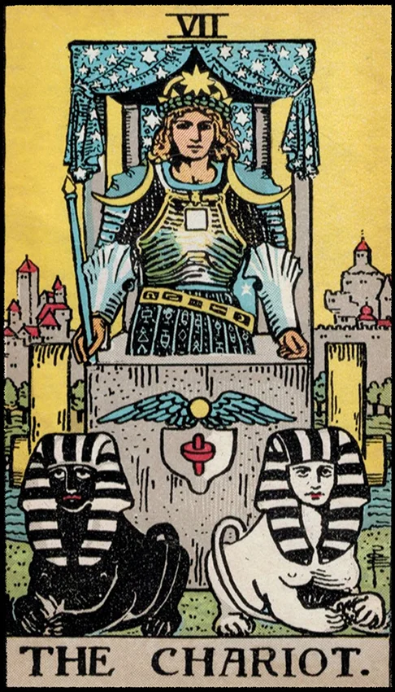

| Archetype | The Hero, The Will, The Ego in Motion, The Warrior, The Persona |
| Psychological Role | Represents the ego asserting control, developing confidence, direction, and purpose |
| Ego Status | A strong, outward-facing ego begins to emerge, focused on goal-setting and mastery |
| Symbolic Number | 7 — struggle, initiation, evolution, spiritual testing |
| Shadow Aspect | Arrogance, ego inflation, lack of emotional integration, control obsession |
| Spiritual Meaning | Victory through self-discipline, alignment of inner drives (the two sphinxes/forces) |
| Unconscious Connection | The Chariot’s power comes from integrating opposing unconscious drives and guiding them consciously |
| Journey Theme | Mastery over inner conflict; moving forward with willpower and purpose |
| Jungian Goal | Development of a balanced ego—one that directs rather than represses the unconscious |